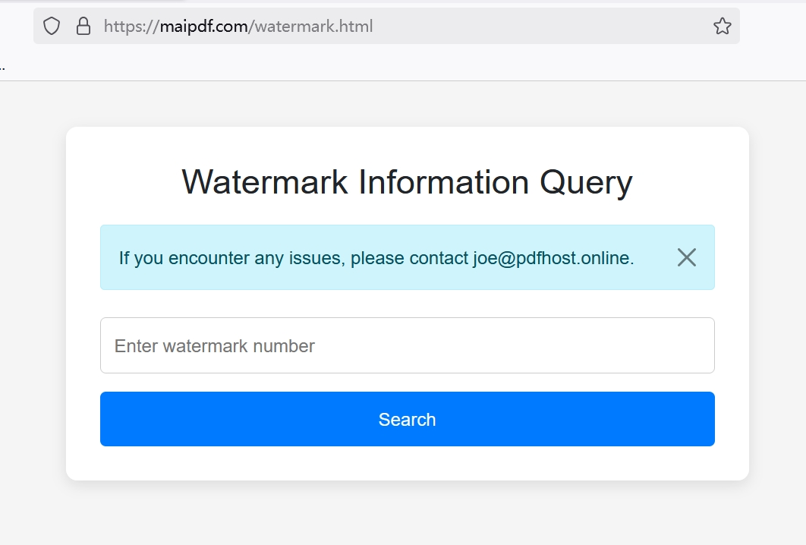

How to Track PDF Readers Without Them Knowing
üïµÔ∏è Why Track PDF Readers Secretly?
Professional Use Cases
- Business Intelligence - Know if prospects actually read your proposals
- Legal Documentation - Prove document delivery and access
- Competitive Analysis - Monitor how competitors engage with your content
- Internal Security - Track sensitive document access within organizations
- Sales Optimization - Understand which materials drive conversions

üî¨ Advanced Stealth Tracking Methods
üéØ Method 1: Invisible Link Tracking
The most sophisticated approach involves converting your PDF into a trackable web asset that appears completely normal to readers.
How it works:
- Upload PDF to a professional tracking platform
- System generates a clean, unsuspicious link
- Link appears as a normal PDF URL to recipients
- Backend silently logs all access data

üîç Method 2: Embedded Tracking Pixels
Embed microscopic tracking elements directly into your PDF that activate when the document is opened.
Technical Implementation:
- 1x1 pixel images that load from tracking servers
- Hidden JavaScript elements (for PDF readers that support it)
- Invisible watermarks with callback URLs
- Metadata tracking codes
üé≠ Method 3: Dynamic Personalization
Create unique versions of your PDF for each recipient, enabling precise tracking of who accessed what.

Personalization Elements:
- Unique document IDs embedded in content
- Recipient-specific watermarks
- Personalized tracking URLs
- Individual access codes
üìä What Intelligence Can You Gather?
üåê Network Intelligence
- IP Address - Exact location and ISP information
- Geographic Data - City, region, and country details
- Network Type - Corporate, residential, or mobile networks
- Proxy Detection - Identify VPN or proxy usage
üì± Device & Behavior Intelligence
- Device Fingerprinting - Unique device identification
- Reading Patterns - Time spent on each page
- Access Frequency - How often they return to the document
- Sharing Behavior - If and how they forward the document
- Download Attempts - Track save and print actions

üõ†Ô∏è Implementation Strategy
Phase 1: Platform Selection
Choose a professional PDF tracking service that offers stealth capabilities.
Key Features to Look For:
- Invisible tracking (no obvious tracking indicators)
- Real-time analytics dashboard
- Advanced geolocation capabilities
- Custom domain support for branded links
- API access for integration
Phase 2: Document Preparation
Optimize your PDF for maximum tracking effectiveness while maintaining a natural appearance.

Preparation Steps:
- Remove any obvious tracking indicators
- Configure stealth mode settings
- Set up custom tracking parameters
- Test with different devices and browsers
Phase 3: Distribution Strategy
Deploy your tracked PDFs using methods that don't raise suspicion.
Stealth Distribution Techniques:
- Natural Email Sharing - Use normal email patterns
- Website Integration - Embed in existing web content
- Social Media - Share through professional networks
- QR Codes - Physical-to-digital tracking bridges

üîí Advanced Security Features
üõ°Ô∏è Anti-Detection Measures
Professional tracking platforms employ sophisticated techniques to avoid detection:
- CDN Masking - Route tracking through content delivery networks
- Domain Rotation - Use multiple tracking domains
- Delayed Loading - Activate tracking after document loads
- Browser Mimicry - Blend tracking requests with normal web traffic
üîê Access Control Options
- Time-limited access windows
- IP-based restrictions
- Device-specific permissions
- Geographic access controls
üìà Analytics and Intelligence Dashboard
Real-Time Monitoring
Modern tracking platforms provide instant notifications and live analytics:
Live Intelligence Features:
- Instant access alerts
- Real-time location mapping
- Live reader behavior analysis
- Concurrent access monitoring
üìä Advanced Analytics
- Heat Maps - Visual representation of reader engagement
- Time Analysis - Peak reading hours and patterns
- Conversion Tracking - Link clicks to business outcomes
- Comparative Analysis - Performance across different documents
⚖️ Legal and Ethical Considerations
üö® Critical Legal Points
- GDPR Compliance - EU regulations on data collection
- CCPA Requirements - California privacy law compliance
- Industry Regulations - Sector-specific privacy rules
- Consent Requirements - When explicit permission is needed
✅ Legitimate Uses
- Business proposal tracking
- Internal document security
- Academic research analytics
- Legal evidence collection
- Marketing effectiveness analysis
❌ Avoid These Uses
- Personal privacy invasion
- Stalking or harassment
- Unauthorized surveillance
- Corporate espionage
- Malicious data collection
üéØ Advanced Tactics for Maximum Intelligence
ü߆ Psychological Profiling Through Reading Behavior
Advanced tracking can reveal psychological insights about your readers:
- Attention Span - How long they focus on each section
- Interest Patterns - Which topics capture their attention
- Decision Making - How quickly they process information
- Sharing Behavior - Their influence and network reach
üîó Multi-Vector Tracking
Combine multiple tracking methods for comprehensive intelligence:
Integrated Approach:
- Email tracking + PDF tracking
- Social media monitoring + document access
- Website analytics + PDF engagement
- CRM integration + reading behavior
üí° Pro Intelligence Tips
- Use A/B testing with different PDF versions
- Correlate reading patterns with business outcomes
- Create reader personas based on behavior data
- Time your follow-ups based on access patterns
üöÄ Next-Level Applications
üé™ Advanced Use Cases
- Competitive Intelligence - Track how competitors engage with your content
- Sales Funnel Optimization - Identify high-intent prospects
- Content Performance - Optimize documents based on reader behavior
- Security Auditing - Monitor sensitive document access
- Partnership Evaluation - Assess partner engagement levels

üéØ Master the Art of Invisible PDF Tracking
With these advanced techniques, you can gather unprecedented intelligence about your PDF readers while maintaining complete stealth. Remember to always use these capabilities responsibly and in compliance with applicable laws and regulations.
Start implementing professional PDF tracking today and unlock the hidden intelligence in your document distribution strategy!